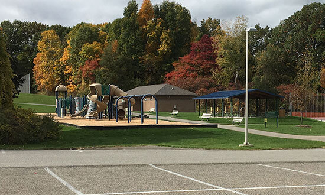
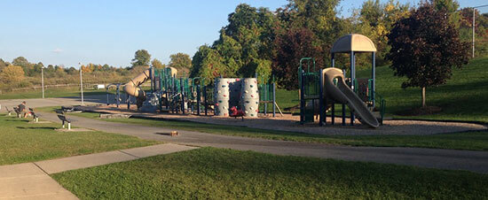

Recreation at Dryer Road Park

Pavilion & Facilities
Family reunion coming up, but you all love to be outdoors? Come on down to Dryer Road Park and grill up some burgers, dogs, and great times. The park pavilion is open to the public and a charcoal grill is provided. Special events, like birthday or graduation parties, can be held here anytime. Restroom facilities are close by, clean, and well maintained.
Quick Details:
- Large pavilion space with benches
- Charcoal grill available
- Make sure to bring a leash for your pets
- Clean and maintained restroom facilities nearby
- Great outdoor environment for gatherings

Playground
Kids will love the modern playground at Dryer Road Park, with plenty of slides, monkey bars, climbing rocks, and more for hours of entertainment and exercise.
Quick Details:
- Large, modern, safe playground for kids of all ages
- Swingset next to the main playground